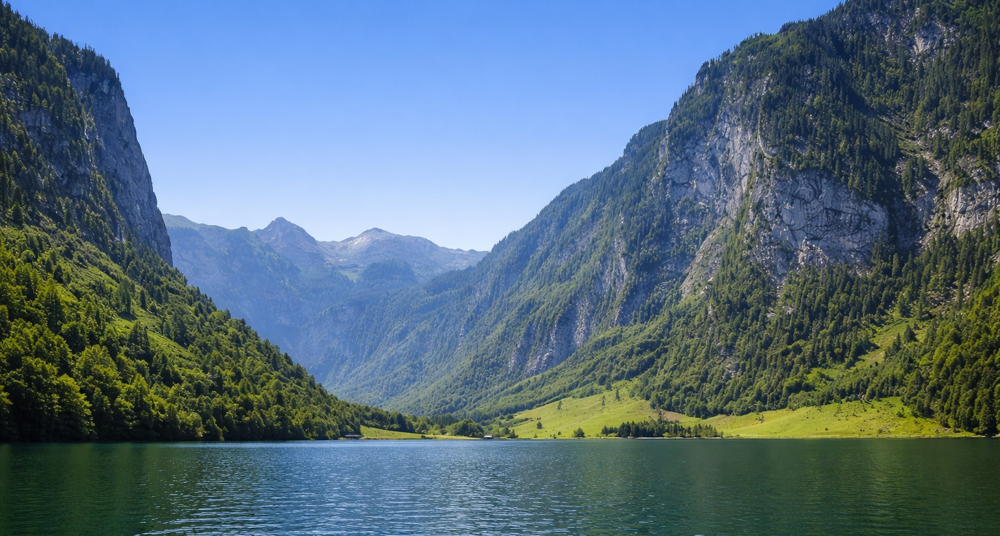

10. Königssee
47.59485, 12.986016

A Königssee Bajorország egyik legismertebb alpesi tava, fjordszerű formáját meredek hegyoldalak és sziklafalak határozzák meg. A tó hossza nagyjából 7,7 km, legnagyobb mélysége közel 190 méter, ezért a víz még nyáron is hűvös karakterű, és különösen tiszta.
A part menti hajózásnak sajátos hagyománya van: a tavon régóta elektromos hajók közlekednek, részben a természeti környezet védelme miatt. A klasszikus útvonal egyik célpontja a Szent Bertalan-templom (St. Bartholomä) jellegzetes, hagymasisakos tornyaival, amely a tó ikonikus képe lett.
A tó akusztikája is híres, a hajókon gyakran bemutatják a visszhangot, ami a szűk völgyforma miatt különösen tisztán érzékelhető. A Königssee így egyszerre természeti ritkaság, kultikus képeslaphelyszín és a Berchtesgaden Nemzeti Park egyik legjobban dokumentált látogatói pontja.